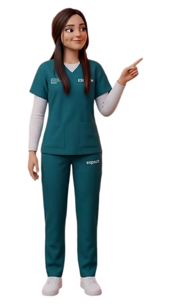

Bienvenido/a.
Me alegra que estés aquí.
Esta página nació con el propósito de acompañar a estudiantes que, como yo, han experimentado el estrés que puede surgir durante la vida académica. Mi objetivo es ofrecer un espacio donde puedas encontrar información confiable, herramientas prácticas y estrategias que te ayuden a comprender, manejar y prevenir el estrés.
Espero que, al recorrer este sitio, te sientas comprendido/a, acompañado/a y en confianza. Deseo que este espacio te brinde un momento de calma, te recuerde que no estás solo/a y te ayude a encontrar recursos que contribuyan a tu bienestar.